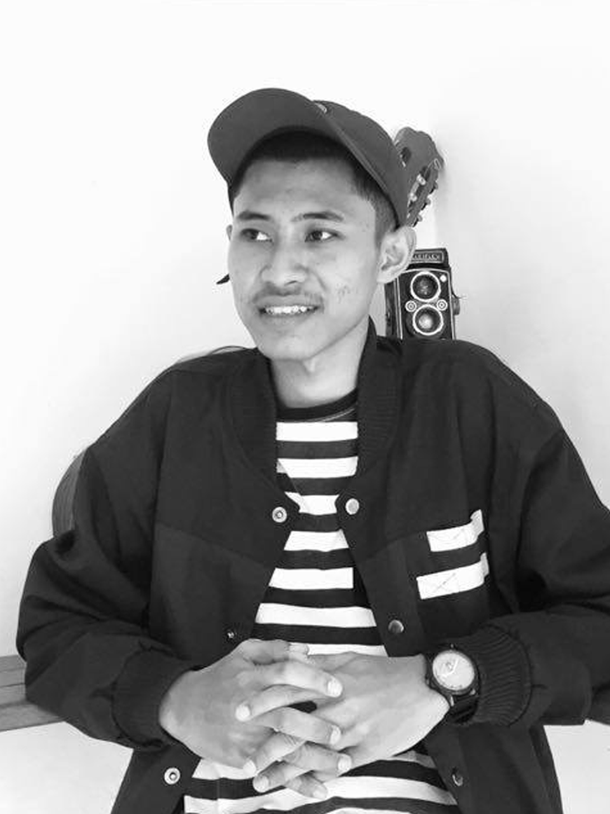

Logo.png)
Waktu kecil aku berhobi main bola dan sekarang aku berhobi yang namanya main game. Aku bercita-cita nanti pada suatu saat tim e-sport/ tim game online yang aku buat bakalan gede, dan aku sangat percaya akan hal itu karena setiap orang memiliki massa dan yang dibawah pasti keatas jika mau berusaha. Oke kenapa dari hobi bermain sepak bola bisa menjadi hobi bermain game, karena gini semakin aku besar semakin aku tahu apa passionku dan aku akan mengejar passion tersebut, karena jika kalian bekerja dengan apa passion kalian maka otomatis kalian tidak pernah merasa bosan bekerja. Masa TK dan masa sebelum aku menginjak bangku sekolah aku sudah menjadi orang yang disiplin karena dorongan dari orang tuaku yang selalu membangunkanku tepat jam 5. Sekarang menuju ke masa SD dimana masih polos-polosnya aku, aku bersekolah di SDN Negeri Jombok 1, bisa dibilang kalau ingin masuk ke sekolah itu harus bisa membaca dan menulis. Waktu SD aku takut yang namanya suntik. Setiap kali aku suntik aku pasti merubah pikiranku bahwa aku sudah tidak bernyawa hehehe, jadi setiap kali aku suntik tidak merasa sakit sedikitpun. Waktu SD aku sering banget yang namanya beli mainan di depan sekolah hehehe, Waktu SD aku sudah hobi main game loh wkwkwk. Waktu masih jamannya Point Blank, selalu datang ke warnet setelah pulang sekolah dan pulang dari warnet sekitar jam 3 karena pada jam 3 aku mengaji. Waktu kecil aku sudah kecanduan warnet dan ada untung dan ruginya juga. Untungnya : Aku dapat memiliki banyak teman, aku bisa komputer. Ruginya : Masa kecilku dihabiskan di warnet. Oh iya meskipun aku sering banget ke warnet tapi aku selalu dapat ranking meskipun rangking 6-9. Aku mengenal warnet dari tahun 2011an. Waktu kelas 4 SD aku pernah ikut lomba Drum Band, dan itu sangat melelahkan banget, setiap hari harus latihan dan anehnya waktu aku mau keluar dari organisasi Drrum Band tersebut kalau ingin keluar harus izin ke kepala sekolah, pada waktu itu aku juga masih menjadi orang yang pemalu hehehe. Waktu kelas 6 SD atau lebih tepatnya waktu mau ujian nasional, aku malah tidak belajar sama sekali, tetapi untugnya danem yang aku peroleh cukup amat memuaskan yaitu 28,05.
